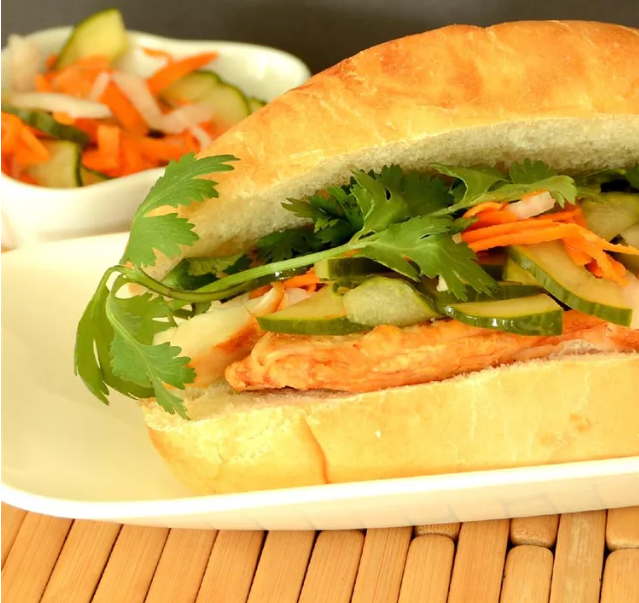

Bahn Mi

This banh mi (Vietnamese sandwich) is made with chicken and full of pickled vegetables. My husband works around a lot of Vietnamese restaurants, and I was making him bring me home these tasty sandwiches. Finally I attempted to make one, and here it is. I also love the pickled vegetables, so I make sure there are plenty of those.
- cup rice vinegar
- cup white sugar
- cup water
- Gcup peeled and matchstick-cut daikon radish
- up thinly sliced white onion
- Combine rice vinegar, sugar, and water in a saucepan. .
- Place carrot, radish, and onion in a bowl. Pour in cooled vinegar mixture and let marinate at least 30 minutes.
- While vegetables marinate, set an oven rack about 6 inches from the heat source and preheat the broiler. Lightly oil a slotted broiler pan.
- Sprinkle chicken breast with garlic salt and pepper.
- Place chicken on a cutting board. Cut into bite-sized pieces.